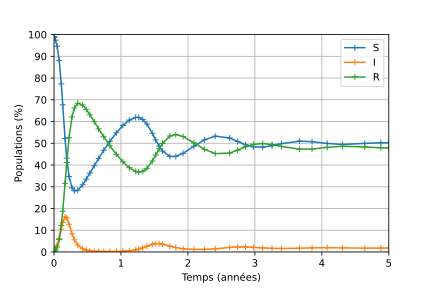
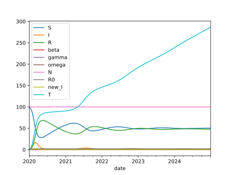
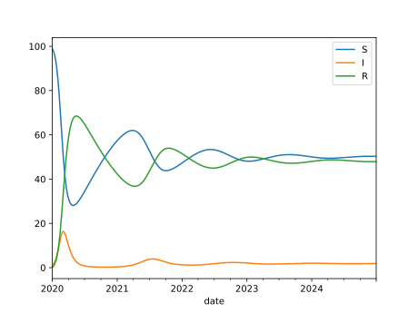
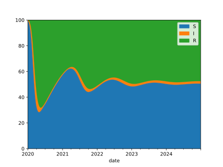
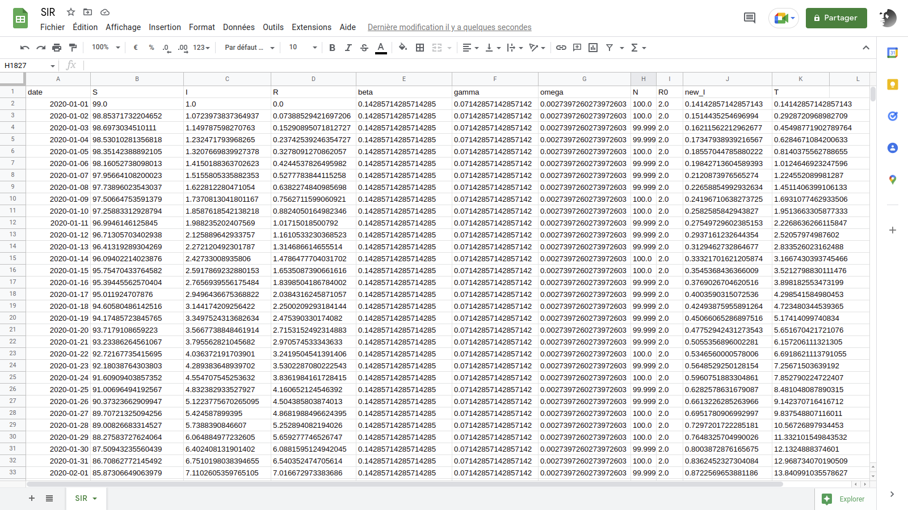

Le modèle épidémiologique SIR
Vendredi 20 mai 2022
Vendredi 20 mai 2022
Le modèle épidémiologique à compartiments SIR détermine l’évolution dans le temps, parmi une population supposée constante de \(N\) individus, du nombre d’individus susceptibles d'être infectés \(S\), du nombre d’individus infectés \(I\) et du nombre d’individus en rémission (n’ayant plus de symptômes cliniques) \(R\) (cf.“The SEIRS model for infectious disease dynamics” pour la présentation d’un modèle plus complet).
Le paramètre \(\beta>0\) représente le taux de contagion, \(\gamma>0\) le taux de guérison et \(\omega>0\) le taux de perte d’immunité (ces grandeurs sont homogènes à l’inverse d'un temps). On définit le nombre de reproduction de base \(R_0\) par
\[ R_0 := \frac{\beta}{\gamma} \]
En l'absence de naissances et de morts, ces grandeurs évoluent selon les équations :
\[ \dot{S}(t) = \omega R(t) - \beta \frac{I(t)S(t)}{N} \]
\[ \dot{I}(t) = \beta \frac{I(t)S(t)}{N} - \gamma I(t) \]
\[ \dot{R}(t) = \gamma I(t) - \omega R(t) \]
Python 3, NumPy, SciPy, Matplotlib.
from numpy import *
from scipy.integrate import solve_ivp
import matplotlib.pyplot as pltOn définit les constantes
WEEK = 7
YEAR = 365et
N = 100
beta = 1 / (WEEK)
gamma = 1 / (2 * WEEK)
omega = 1 / YEARsolve_ivpDévelopper une fonction dSIR telle que le code
S0, I0 = 99.0, 1.0
R0 = N - S0 - I0
t_span = [0.0, 5*YEAR]
results = solve_ivp(dSIR, t_span=t_span, y0=(S0, I0, R0))fournisse les résultats d’une simulation du modèle SIR sur 5 ans avec une population initiale de 1 % de personnes infectées.
(R√©f√©rence : üìñ solve_ivp)
def dSIR(t, SIR):
S, I, R = SIR
dS = omega * R - beta * I * S / N
dI = beta * I * S / N - gamma * I
dR = gamma * I - omega * R
return (dS, dI, dR)Si vous êtes familier des fermetures, et que la présence d’un
argument t “qui ne sert à rien” vous titille, vous pouvez
également définir la fonction d’ordre supérieur
def autonomous(fx):
def f_tx(t, x):
return fx(x)
return f_txet l’exploiter comme un décorateur pour définir dSIR
sans le paramètre t :
@autonomous
def dSIR(SIR):
S, I, R = SIR
dS = omega * R - beta * I * S / N
dI = beta * I * S / N - gamma * I
dR = gamma * I - omega * R
return (dS, dI, dR)Développez une fonction plot à invoquer par :
plot(**results)qui produise le graphique :

Les données dont nous avons besoin dans le dictionnaire
results sont associées aux clés "t" et
"y". Si elles étaient les seules données présentes dans
results, nous pourrions définir une fonction
plot de signature :
def plot(t, y):
passet l’appel plot(**results) assignerait aux paramètres
t et y les données correspondantes de
result. Mais en pratique, results contient
d’autre données :
>>> list(results.keys())
['t', 'y', 'sol', 't_events', 'y_events', 'nfev', ...]Or à ce stade notre fonction n’accepte pas les paramètres nommés
sol, t_events, etc. L’appel à
plot échoue donc logiquement :
>>> plot(**result)
Traceback (most recent call last):
...
TypeError: plot() got an unexpected keyword argument 'sol'Une façon de changer cette situation est d’introduire un
“ramasse-miettes”, sous la forme d’un dictionnaire collectant les
données deresult qui ne sont pas associées aux clés
"t" ou "y". Pour ce faire, la notation
** est utilisée ; le dictionnaire associé est ici nommé
_ pour indiquer qu’on ne fera pas usage de son contenu
(cela n’est pas obligatoire, juste une convention).
def plot(t, y, **_):
print(list(_.keys()))>>> plot(**results)
['sol', 't_events', 'y_events', ...]Avec cette technique, la fonction suivante fait l’affaire :
def plot(t, y, **_):
plt.plot(t, y.T, "-+", label=["S", "I", "R"])
plt.xlabel("Temps (années)")
xlabels = [str(i) for i in range(5+1)]
plt.xticks(arange(0, 5*YEAR+1, YEAR), xlabels)
plt.ylabel("Populations (%)")
plt.yticks(arange(0, 101, 10))
plt.axis([0, 5*YEAR, 0, 100])
plt.legend()
plt.grid(True)Après examen de vos résultats préliminaires, les spécialistes de la
dynamique vous font par de réglages à effectuer sur la méthode du
simulation. Leurs préconisations prennent la forme d’un fichier
options.py à utiliser avec solve_ivp :
{
"method": "Radau",
"rtol": 1e-3,
"atol": 1e-6
}Prenez en compte le fichier d’options que l’on vous a donné.
options = eval(open("options.py").read())
results = solve_ivp(
dSIR,
t_span=t_span,
y0=(S0, I0, R0),
**options
)
Lorsque solve_ivp est invoqué avec
dense_output=True
results = solve_ivp(
dSIR,
t_span=t_span,
y0=(S0, I0, R0),
dense_output=True
)ses résultats comportent, en plus des données discrètes
t et y, une approximation de la solution comme
une fonction du temps.
>>> sol = results["sol"]Cette fonctionalité nous permet de réaliser une nouvelle version de
la fonction plot, telle que :
>>> t = arange(0, 5*YEAR) # a value every day for 5 years.
>>> plot(t, **results)produise le graphique :

Vérifier que sol est invocable, puis développer une
nouvelle version de la fonction plot exploitant les “dense
outputs” de solve_ivp pour réaliser le graphe voulu.
>>> sol = results["sol"]
>>> sol
<scipy.integrate._ivp.common.OdeSolution at ...>
>>> callable(sol)
Truedef plot(t_, sol, **_):
plt.plot(t_, sol(t_).T, "-", label=["S", "I", "R"])
plt.xlabel("Temps (années)")
xlabels = [str(i) for i in range(5+1)]
plt.xticks(arange(0, 5*YEAR+1, YEAR), xlabels)
plt.ylabel("Populations (%)")
plt.yticks(arange(0, 101, 10))
plt.axis([0, 5*YEAR, 0, 100])
plt.legend()
plt.grid(True)Utiliser le paramètre events de solve_ivp
pour détecter les instants où le nombre d’infectés passe en-dessous ou
au-dessus de 10 %. Adapter une nouvelle fois la fonction
plot pour représenter ces évènements comme des points noirs
sur la courbe associée à la variable \(I\).

Comment réorganiser votre programme pour prendre en charge facilement un seuil d’infection arbitraire et non pas fixe à 10 % ?
def event(t, SIR):
S, I, R = SIR
return I - 10.0results = solve_ivp(
dSIR,
y0=(S0, I0, R0),
t_span=t_span,
dense_output=True,
events=[event]
)def plot(t_, sol, t_events, **_):
plt.plot(t_, sol(t_).T, "-", label=["S", "I", "R"])
t_event = t_events[0]
plt.plot(t_event, sol(t_event)[1], "k.")
plt.xlabel("Temps (années)")
xlabels = [str(i) for i in range(5+1)]
plt.xticks(arange(0, 5*YEAR+1, YEAR), xlabels)
plt.ylabel("Populations (%)")
plt.yticks(arange(0, 101, 10))
plt.axis([0, 5*YEAR, 0, 100])
plt.legend()
plt.grid(True)La solution “évidente” pour prendre en charge une seuil limite qui peut varier est d’utiliser une variable globale :
I_max = 2.0
def event(t, SIR):
S, I, R = SIR
return I - I_maxL’avantage est que le code appelant la simulation est inchangé :
results = solve_ivp(
dSIR,
y0=(S0, I0, R0),
t_span=t_span,
dense_output=True,
events=[event]
)>>> plot(t, **results)
Si vous n’aimez pas beaucoup les variables globales, vous pouvez les
éviter en utilisant une fonction d’ordre supérieur qui renvoie une
fonction event :
def I_crosses(I_threshold):
def event(t, SIR):
S, I, R = SIR
return I - I_threshold
return eventVous l’exploitez alors de la façon suivante :
results = solve_ivp(
dSIR,
y0=(S0, I0, R0),
t_span=t_span,
dense_output=True,
events=[I_crosses(2.0)]
)avec les même résultats que précédemment
Vous avez sans doute remarqué que la dynamique du modèle SIR est entièrement déterminée par les flux existant entre les “compartiments” de population \(S\), \(I\) et \(R\), qui peuvent être décrits par la structure :
SIR_dynamics = {
("S", "I"): "beta * I * S / N",
("I", "R"): "gamma * I",
("R", "S"): "omega * R"
}Au lieu d’écrire “à la main” la fonction dSIR comme
précédemment, on peut définir une fonction make_d_state qui
prend comme argument le type de dictionnaire ci-dessus et produit
automatiquement la fonction dSIR_auto1
:
dSIR_manu = dSIR
dSIR_auto = make_dstate(SIR_dynamics)Implémenter la fonction make_dstate. On vérifiera que
les comportements de la version manuelle et automatique sont identiques.
Par exemple :
>>> dSIR_manu(0.0, (1/3, 1/3, 1/3))
(0.0007545118504022613, -0.023650793650793648, 0.02289628180039139)
>>> dSIR_auto(0.0, (1/3, 1/3, 1/3))
(0.0007545118504022613, -0.023650793650793648, 0.02289628180039139)def get_vars(dynamics):
vars = []
for pair in dynamics.keys():
vars.extend(pair)
# remove duplicated vars
return list(set(vars))>>> get_vars(SIR_dynamics)
['S', 'I', 'R']def make_dstate(dynamics):
vars = get_vars(dynamics)
def fun(t, state):
ns = globals().copy()
for var, value in zip(vars, state):
ns[var] = value
dstate = []
for var in vars:
d = 0
for (edge, expr) in dynamics.items():
source, target = edge
if source == var:
d -= eval(expr, ns)
if target == var:
d += eval(expr, ns)
dstate.append(d)
return dstate
return fun On reproduit ici l’intégralité du code qui permet de générer la séquence des valeurs journalières de \(S\), \(I\) et \(R\) pendant les 5 premières années de l’épidémie :
from numpy import *
from scipy.integrate import solve_ivp
WEEK = 7
YEAR = 365
beta = 1 / (WEEK)
gamma = 1 / (2 * WEEK)
omega = 1 / YEAR
N = 100
S0, I0 = 99.0, 1.0
R0 = N - S0 - I0
def dSIR(t, SIR):
S, I, R = SIR
dS = omega * R - beta * I * S / N
dI = beta * I * S / N - gamma * I
dR = gamma * I - omega * R
return (dS, dI, dR)
t_span = [0.0, 5*YEAR]
results = solve_ivp(
dSIR,
y0=(S0, I0, R0),
t_span=t_span,
dense_output=True,
)
t = arange(0, 5*YEAR)
S, I, R = results["sol"](t)Cr√©er un tableau de donn√©es (üá∫üá∏
dataframe) pandas stockant les valeurs
journalières de \(S\), \(I\) et \(R\) dans des colonnes de même nom. Ajouter
ensuite les colonnes des valeurs (constantes dans notre modèle) \(\beta\), \(\gamma\) et \(\omega\) (on nommera les colonnes
correspondantes beta, gamma et
omega). Afficher un résumé du tableau avant et après cet
ajout.
>>> import pandas as pd
>>> df = pd.DataFrame({"S":S, "I": I, "R": R})
>>> df # doctest: +ELLIPSIS
S I R
0 99.000000 1.000000 0.000000
1 98.853717 1.072397 0.073885
2 98.697303 1.149788 0.152909
3 98.530103 1.232472 0.237425
4 98.351424 1.320767 0.327809
...
1820 50.279454 1.851949 47.868597
1821 50.277556 1.852686 47.869759
1822 50.275613 1.853418 47.870969
1823 50.273626 1.854145 47.872229
1824 50.271597 1.854867 47.873536
[1825 rows x 3 columns]df["beta"] = beta
df["gamma"] = gamma
df["omega"] = omega>>> df
S I R beta gamma omega
0 99.000000 1.000000 0.000000 0.142857 0.071429 0.00274
1 98.853717 1.072397 0.073885 0.142857 0.071429 0.00274
2 98.697303 1.149788 0.152909 0.142857 0.071429 0.00274
3 98.530103 1.232472 0.237425 0.142857 0.071429 0.00274
4 98.351424 1.320767 0.327809 0.142857 0.071429 0.00274
...
1820 50.279454 1.851949 47.868597 0.142857 0.071429 0.00274
1821 50.277556 1.852686 47.869759 0.142857 0.071429 0.00274
1822 50.275613 1.853418 47.870969 0.142857 0.071429 0.00274
1823 50.273626 1.854145 47.872229 0.142857 0.071429 0.00274
1824 50.271597 1.854867 47.873536 0.142857 0.071429 0.00274
[1825 rows x 6 columns]L’étape précédente a stocké dans le tableau toutes les données dont on aura besoin par la suite. Les grandeurs qu’on pourra désormais y ajouter se déduiront des données qui y sont stocké.
Ajoutez une colonne N dont les valeurs sont les
sommes de S, I et R, puis ajoutez
une colonne R0 calculant la ratio entre beta
et gamma.
L’épidémie a commencé le 1er janvier 2020. Créez une colonne
date donnant le jour associé à chaque ligne de donnée, puis
l’adopter comme index (plutôt que d’utiliser l’entier qui nous a servi
jusqu’à présent).
Calculer le nombre de nouveaux infectés \(\beta I S/N\) chaque jour et définir une
nouvelle colonne T comptabilisant le nombre total d’infecté
depuis le début de l’épidémie.
df["N"] = df["S"] + df["I"] + df["R"]
df["R0"] = df["beta"] / df["gamma"]>>> df # doctest: +ELLIPSIS
S I R ... omega N R0
0 99.000000 1.000000 0.000000 ... 0.00274 100.0 2.0
1 98.853717 1.072397 0.073885 ... 0.00274 100.0 2.0
2 98.697303 1.149788 0.152909 ... 0.00274 100.0 2.0
3 98.530103 1.232472 0.237425 ... 0.00274 100.0 2.0
4 98.351424 1.320767 0.327809 ... 0.00274 100.0 2.0
...
1820 50.279454 1.851949 47.868597 ... 0.00274 100.0 2.0
1821 50.277556 1.852686 47.869759 ... 0.00274 100.0 2.0
1822 50.275613 1.853418 47.870969 ... 0.00274 100.0 2.0
1823 50.273626 1.854145 47.872229 ... 0.00274 100.0 2.0
1824 50.271597 1.854867 47.873536 ... 0.00274 100.0 2.0
[1825 rows x 8 columns]>>> datetime64("2020-01-01")
numpy.datetime64('2020-01-01')
>>> start = datetime64("2020-01-01")
>>> end = start + len(df["S"]) - 1
>>> start
numpy.datetime64('2020-01-01')
>>> end
numpy.datetime64('2024-12-29')
>>> dates = pd.date_range(start, end)
>>> dates # doctest: +ELLIPSIS
DatetimeIndex(['2020-01-01', '2020-01-02', '2020-01-03', '2020-01-04',
'2020-01-05', '2020-01-06', '2020-01-07', '2020-01-08',
'2020-01-09', '2020-01-10',
...
'2024-12-20', '2024-12-21', '2024-12-22', '2024-12-23',
'2024-12-24', '2024-12-25', '2024-12-26', '2024-12-27',
'2024-12-28', '2024-12-29'],
dtype='datetime64[ns]', length=1825, freq='D')
>>> df["date"] = dates
>>> df # doctest: +ELLIPSIS
S I R ... N R0 date
0 99.000000 1.000000 0.000000 ... 100.0 2.0 2020-01-01
1 98.853717 1.072397 0.073885 ... 100.0 2.0 2020-01-02
2 98.697303 1.149788 0.152909 ... 100.0 2.0 2020-01-03
3 98.530103 1.232472 0.237425 ... 100.0 2.0 2020-01-04
4 98.351424 1.320767 0.327809 ... 100.0 2.0 2020-01-05
...
1820 50.279454 1.851949 47.868597 ... 100.0 2.0 2024-12-25
1821 50.277556 1.852686 47.869759 ... 100.0 2.0 2024-12-26
1822 50.275613 1.853418 47.870969 ... 100.0 2.0 2024-12-27
1823 50.273626 1.854145 47.872229 ... 100.0 2.0 2024-12-28
1824 50.271597 1.854867 47.873536 ... 100.0 2.0 2024-12-29
[1825 rows x 9 columns]
>>> df = df.set_index("date")
>>> df
S I R ... omega N R0
date ...
2020-01-01 99.000000 1.000000 0.000000 ... 0.00274 100.0 2.0
2020-01-02 98.853717 1.072397 0.073885 ... 0.00274 100.0 2.0
2020-01-03 98.697303 1.149788 0.152909 ... 0.00274 100.0 2.0
2020-01-04 98.530103 1.232472 0.237425 ... 0.00274 100.0 2.0
2020-01-05 98.351424 1.320767 0.327809 ... 0.00274 100.0 2.0
...
2024-12-25 50.279454 1.851949 47.868597 ... 0.00274 100.0 2.0
2024-12-26 50.277556 1.852686 47.869759 ... 0.00274 100.0 2.0
2024-12-27 50.275613 1.853418 47.870969 ... 0.00274 100.0 2.0
2024-12-28 50.273626 1.854145 47.872229 ... 0.00274 100.0 2.0
2024-12-29 50.271597 1.854867 47.873536 ... 0.00274 100.0 2.0
[1825 rows x 8 columns]>>> df = df.eval("new_I = beta * I * S / N")
>>> df # doctest: +ELLIPSIS
S I R ... N R0 new_I
date ...
2020-01-01 99.000000 1.000000 0.000000 ... 100.0 2.0 0.141429
2020-01-02 98.853717 1.072397 0.073885 ... 100.0 2.0 0.151444
2020-01-03 98.697303 1.149788 0.152909 ... 100.0 2.0 0.162116
2020-01-04 98.530103 1.232472 0.237425 ... 100.0 2.0 0.173479
2020-01-05 98.351424 1.320767 0.327809 ... 100.0 2.0 0.185570
...
2024-12-25 50.279454 1.851949 47.868597 ... 100.0 2.0 0.133021
2024-12-26 50.277556 1.852686 47.869759 ... 100.0 2.0 0.133069
2024-12-27 50.275613 1.853418 47.870969 ... 100.0 2.0 0.133117
2024-12-28 50.273626 1.854145 47.872229 ... 100.0 2.0 0.133164
2024-12-29 50.271597 1.854867 47.873536 ... 100.0 2.0 0.133210
[1825 rows x 9 columns]>>> df["T"] = df["new_I"].cumsum()
>>> df # doctest: + ELLIPSIS
S I R ... R0 new_I T
date ...
2020-01-01 99.000000 1.000000 0.000000 ... 2.0 0.141429 0.141429
2020-01-02 98.853717 1.072397 0.073885 ... 2.0 0.151444 0.292872
2020-01-03 98.697303 1.149788 0.152909 ... 2.0 0.162116 0.454988
2020-01-04 98.530103 1.232472 0.237425 ... 2.0 0.173479 0.628467
2020-01-05 98.351424 1.320767 0.327809 ... 2.0 0.185570 0.814038
...
2024-12-25 50.279454 1.851949 47.868597 ... 2.0 0.133021 286.095531
2024-12-26 50.277556 1.852686 47.869759 ... 2.0 0.133069 286.228601
2024-12-27 50.275613 1.853418 47.870969 ... 2.0 0.133117 286.361717
2024-12-28 50.273626 1.854145 47.872229 ... 2.0 0.133164 286.494881
2024-12-29 50.271597 1.854867 47.873536 ... 2.0 0.133210 286.628091
[1825 rows x 10 columns]Représentez graphiquement avec la méthode plot des
tableaux pandas le contenu du tableau de données.
Renouvellez l’opération en ne représentant que les valeurs de
S, I et R.
Renouvellez l’opération en ne représentant que les valeurs de
S, I et R et en utilisant la
méthode plot.area avec l’option
stacked=True.
Revenir à l’étape 2 en ajoutant T au jeu de
variables représentées.
Représenter les même variables avec la même méthode, mais uniquement sur la première année de l’épidémie.

>>> import matplotlib.pyplot as plt>>> df.plot()
>>> plt.show()
>>> df_SIR = df[["S", "I", "R"]]
>>> df_SIR.plot()
>>> plt.show()
>>> df_SIR.plot.area(stacked=True)
<AxesSubplot:xlabel='date'>
>>> plt.ylim((0.0, 100.0))
(0.0, 100.0)
>>> plt.show()
>>> df_SIRT = df[["S", "I", "R", "T"]]
>>> df_SIRT.plot()
>>> plt.show()
>>> df_SIRT_1st_year = df_SIRT["2020-01-01":"2021-01-01"]
>>> df_SIRT_1st_year.plot()
<AxesSubplot:xlabel='date'>
>>> plt.show()
Exporter votre tableau pandas au formats CSV, puis ouvrez une des deux versions avec LibreOffice, Google Sheets ou Excel (ou application équivalente de votre choix.

>>> df.to_csv("SIR.csv")On peut ainsi éviter les erreurs dans la traduction du modèle de flux en équations différentielles, définir plus rapidement de nouveaux modèles compartimentaux, etc.↩︎